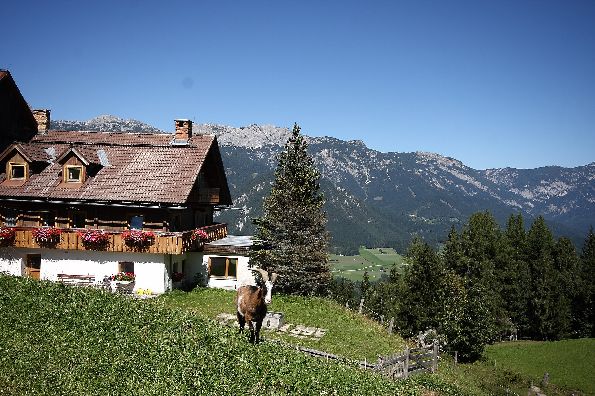
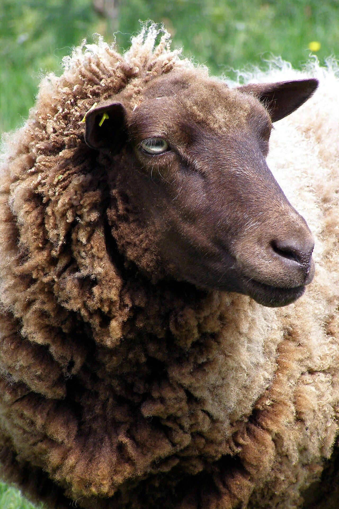

Aufnehmen
Wir holen Tiere aus Beschlagnahmungen, aus der Schlachtkette und von Menschen, die nicht mehr weiterwissen – auch die alten, kranken und „unrentablen“.

Ein Zuhause für immer
Auf Mimi's Rainbow Haven leben Schafe und Ziegen, die niemand mehr wollte. Sie müssen nichts leisten, nichts hergeben und nie wieder auf einen Transporter. Sie dürfen einfach bleiben – bis zum letzten Tag.
Willkommen
Es begann mit einer alten Ziege namens Mimi, die am Rand einer Weide stand und nicht mehr aufstehen konnte. Heute, viele Jahre später, grasen auf unseren Wiesen 23 Schafe und Ziegen – jedes mit einer Geschichte, die man ihnen nicht mehr ansieht.
Wir sind kein Streichelzoo und keine Zucht. Wir sind ein Lebenshof: Wer hier ankommt, bleibt. Für immer. Das ist das ganze Konzept – und es ist jeden Tag Arbeit, Heu, Tierarztkosten und ziemlich viel Liebe.

Unsere Mission
Wir können die Welt nicht retten. Aber wir können für diese Tiere hier alles ändern – und zeigen, dass Schafe und Ziegen mehr sind als ein Produkt.
Wir holen Tiere aus Beschlagnahmungen, aus der Schlachtkette und von Menschen, die nicht mehr weiterwissen – auch die alten, kranken und „unrentablen“.
Kein Weiterverkauf, keine Vermittlung, keine Bedingungen. Jedes Tier erhält lebenslange Versorgung, Tierarzt, Hufpflege und eine stabile Herde um sich.
Bei Hofführungen und Schulbesuchen lernen Menschen Schafe und Ziegen als Individuen kennen. Wer Pauline einmal getroffen hat, denkt anders über sie nach.
Unsere Bewohner
Mimi, Fritzi, Rosa, Hugo, Pauline und Nemo – sechs von 23. Lernen Sie sie kennen, bevor Sie sich entscheiden, wen Sie unterstützen möchten.
Ein Ballen Heu kostet 5 €, eine Hufpflege 35 €, ein Winter für ein Schaf rund 420 €. Schon 10 € im Monat halten eine Nase satt.